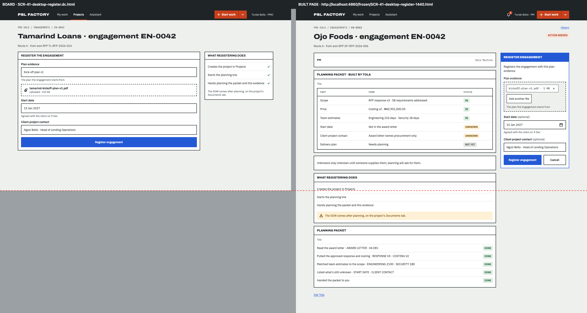
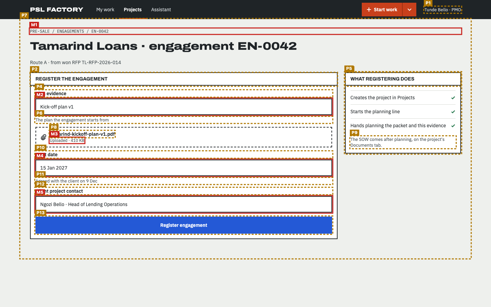
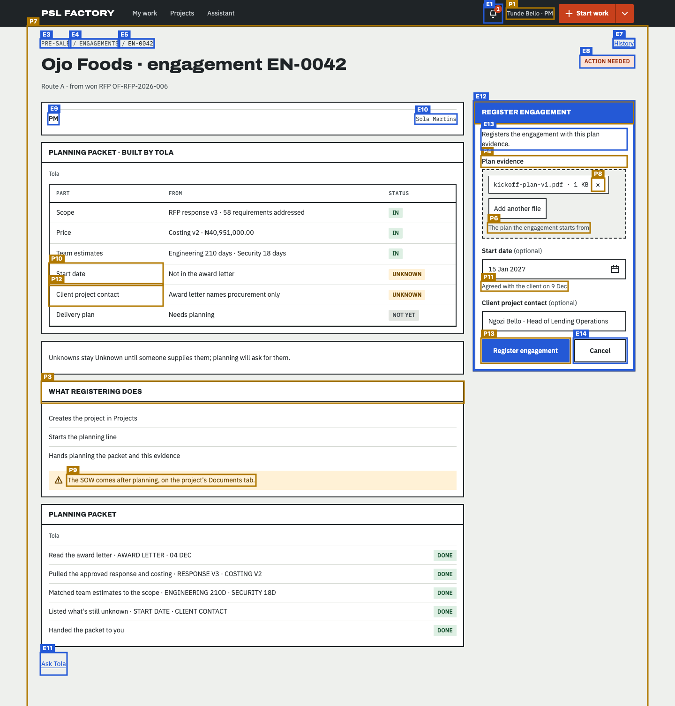
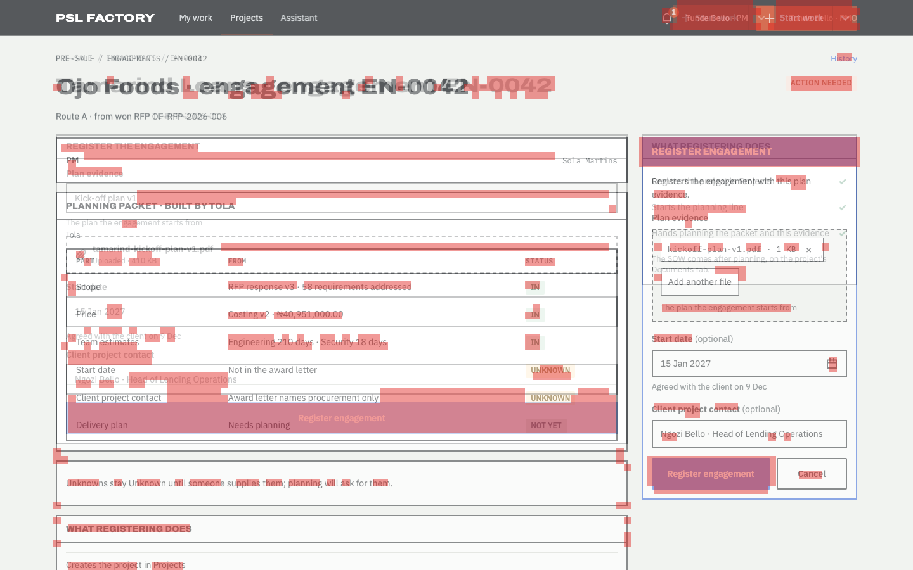

Does the built page follow the design?
Board SCR-41-desktop-register.dc.html compared with http://localhost:4860/frozen/SCR-41-desktop-register-1440.html at 1440px wide · 2026-11-18T02:29:55.839Z
- Every board item is on the page or approved as an exception (100%).
- Visual match 80.1 is below 90.
- 13 item(s) are in a different place; review them (not part of the pass rule unless --strict-position).
22 of 27 things drawn on the board were found on the page: headings, buttons, links, search and filter controls, table columns, labels and the repeated rows (counted once, not per row).
How closely the shapes line up: blocks, bars, tables and text areas, compared in 12px squares over the top 900px. Different words in the same place still count as a match, so sample data does not lower the score.
Missing from the built page 5
Drawn on the board but not found on the page. Each one must be built, or approved as an exception.
| # | What | Text on the board | Where on the board | Exception |
|---|---|---|---|---|
| M1 | Text | PRE-SALE / ENGAGEMENTS / EN-0042 | middle, 84px down | approved Conflicts 10: the frame draws the crumbs from context.crumbs as a plain list; the words are the backend's (Ojo Foods for Tamarind Loans, Conflicts 1/15). · builder proposal, pending design engineer |
| M2 | Text | Kick-off plan v1 | middle, 289px down | approved Conflicts 15: the uploaded file's own name and size are shown by the shared proof field. · builder proposal, pending design engineer |
| M3 | Text | Uploaded · 410 KB | left, 404px down | approved Conflicts 15: the uploaded file's own name and size are shown by the shared proof field. · builder proposal, pending design engineer |
| M4 | Text | 15 Jan 2027 | middle, 468px down | approved Conflicts 3: the typed date is the value of the shared date field, not a text node. · builder proposal, pending design engineer |
| M5 | Text | Ngozi Bello · Head of Lending Operations | middle, 575px down | approved Conflicts 3: the typed contact is the value of the shared text field, not a text node. · builder proposal, pending design engineer |
In a different place 13
Found on both, but in a different order, side of the page, or area (for example inside the table frame instead of above it).
| # | What | How it moved |
|---|---|---|
| P1 | Text Tunde Bello · PMO |
|
| P2 | Text REGISTER THE ENGAGEMENT |
|
| P3 | Text WHAT REGISTERING DOES |
|
| P4 | Text Plan evidence |
|
| P5 | Side panel |
|
| P6 | Text The plan the engagement starts from |
|
| P7 | Main area |
|
| P8 | Text tamarind-kickoff-plan-v1.pdf |
|
| P9 | Text The SOW comes after planning, on the project's Documents tab. |
|
| P10 | Text Start date |
|
| P11 | Text Agreed with the client on 9 Dec |
|
| P12 | Text Client project contact |
|
| P13 | Link Register engagement |
|
Looks different 11
Found on both, but styled differently: table rows and cells, fonts, colours, underlines, outlines, corners. Not part of the score; check each one against the board.
| What | Difference |
|---|---|
| Link "Projects" |
|
| Link "Start work" |
|
| Link "More ways to start" |
|
| Heading "Tamarind Loans · engagement EN-0042" |
|
| Text "REGISTER THE ENGAGEMENT" |
|
| Text "tamarind-kickoff-plan-v1.pdf" |
|
| Text "Start date" |
|
| Text "Client project contact" |
|
| Link "Register engagement" |
|
| Text "WHAT REGISTERING DOES" |
|
| Text "The SOW comes after planning, on the project's Documents tab." |
|
On the page but not on the board 14
Built but not drawn. Some are expected (data, status lines); the rest need the design engineer to approve or remove them.
| # | What | Text on the page | Where on the page |
|---|---|---|---|
| E1 | Button | Alerts, 1 unread | right, 11px down |
| E2 | Navigation area | Where this sits | left, 85px down |
| E3 | Text | PRE-SALE | left, 85px down |
| E4 | Text | ENGAGEMENTS | left, 85px down |
| E5 | Text | EN-0042 | left, 85px down |
| E6 | Navigation area | Work item | right, 85px down |
| E7 | Link | History | right, 84px down |
| E8 | Text | ACTION NEEDED | right, 120px down |
| E9 | Text | PM | left, 243px down |
| E10 | Text | Sola Martins | right, 245px down |
| E11 | Link | Ask Tola | left, 1394px down |
| E12 | Form | Register engagement | right, 217px down |
| E13 | Text | Registers the engagement with this plan evidence. | right, 276px down |
| E14 | Button | Cancel | right, 723px down |
Pictures
The red dashed line on the side-by-side marks how far down the visual score looks. On the marked board, red boxes are missing items (M). On the marked page, amber boxes moved (P) and blue boxes are extra (E). In the difference picture both screens are laid over each other and red squares are where the shapes do not line up.






Notes about this run
- Images: /_blob/ images are served from /Users/Hunchoo/psl-factory/design/mascots/canvas-assets.json (19 mapped).
Found on both (22)
| Navigation area | Main | |
| Text | PSL FACTORY | |
| Link | My work | |
| Link | Projects | |
| Link | Assistant | |
| Link | Start work | |
| Link | More ways to start | |
| Text | Tunde Bello · PMO | page: Tunde Bello · PM |
| Main area | ||
| Heading | Tamarind Loans · engagement EN-0042 | page: Ojo Foods · engagement EN-0042 |
| Text | Route A · from won RFP TL-RFP-2026-014 | page: Route A · from won RFP OF-RFP-2026-006 |
| Text | REGISTER THE ENGAGEMENT | page: REGISTER ENGAGEMENT |
| Text | Plan evidence | |
| Text | The plan the engagement starts from | |
| Text | tamarind-kickoff-plan-v1.pdf | page: Remove kickoff-plan-v1.pdf |
| Text | Start date | |
| Text | Agreed with the client on 9 Dec | |
| Text | Client project contact | |
| Link | Register engagement | |
| Side panel | page: Review and decide | |
| Text | WHAT REGISTERING DOES | |
| Text | The SOW comes after planning, on the project's Documents tab. |
How the scores are worked out
Element coverage. The board is drawn locally from its own template and sample data. From the drawn board the check lists everything a person sees or uses: page areas (navigation, main, search), headings, links, buttons, form fields with their labels, table column headers, filter, search and pagination controls and fixed labels. Rows drawn from sample data count once, as a pattern ("table rows with these columns"). Each item is looked for on the page by its kind and its words (ignoring capitals, curly quotes and small wording differences, at least 80% similar). Coverage is found ÷ drawn. Order is compared in reading order (top to bottom, left to right); an item is "moved" when it breaks the order, sits on the other side of the page, or sits inside a different area.
Visual match. Both full-page screenshots are compared in 12px squares after a light blur, over the board's height (900px; the page is 1506px). Only squares with something in them count. A square matches when its colours line up, or when both have text or lines there. Score = matching ÷ counted squares (5100 of 6365). Over every square including empty background it would be 85.9.
Technical details
Board file: /Users/Hunchoo/psl-factory/design/canvas/project/SCR-41-desktop-register.dc.html
Viewport: 1440×900
Report data: report.json
Exceptions file: /Users/Hunchoo/psl-factory/delivery/features/F-31/fidelity-exceptions.json